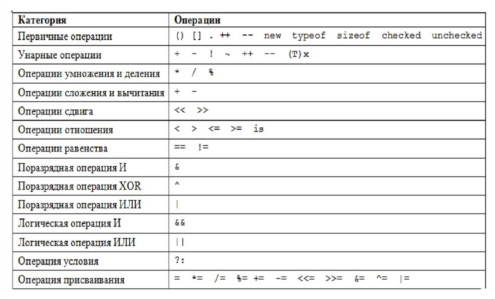

Домашнее задание №3
1
В чём отличие конкатенации от сложения?
Ответ: Конкатенация это сложение цифр просто для письма. Например:
5+3+7=537
4+1+7=417
Арифметическое сложение заключается в сложении цифр согласно правилам математики, то есть надо считаться с количеством в цифре и складывать это количество. Например:
5+5=10
1+7=8
2
Опишите три основных правила именования переменных.
Ответ:
- Правило 1.
Никакого транслита. Только английский. -
Правило 2.
Использовать короткие имена только для переменных «местного значения». -
Правило 3.
Переменные из нескольких слов пишутся вместеВотТак.
3
В чем отличие == от ===?
Ответ: Оператор == сравнивает на равенство, а вот === — на идентичность. Плюс оператора === состоит в том, что он не приводит два значения к одному типу. Именно из-за этого он обычно и используется.
4
Объясните причины использования методов parseInt(), parseFloat(), Number()
Ответ: Функция parseFloat() принимает строку в качестве аргумента и возвращает десятичное число (число с плавающей точкой)
Функция parseInt() принимает строку в качестве аргумента и возвращает целое число в соответствии с указанным основанием системы счисления.
бъект Number является объектом-обёрткой, позволяющей вам работать с числовыми значениями. Объект Number создаётся через конструктор Number().
5
>Зачем использовать битовые операции?Ответ: Битовые операции, как можно понять из названия, заключаются в сдвиге битов вправо (>>) или влево (<<).
Давайте предположим, что нам необходимо выставить первый и второй бит в состояние 1, остальные назначить нулями.
6
Постройте таблицу приоритетов математических операторов.
7
Как использовать методы String, Number, Boolean?
Ответ: Объект Number является объектом-обёрткой, позволяющей вам работать с числовыми значениями. Объект Number создаётся через конструктор Number().
Глобальный объект String является конструктором строк, или, последовательностей символов.
Boolean Значение, переданное первым параметром, при необходимости преобразуется в логическое значение. Если значение опущено или равно 0, -0, null, false, NaN, undefined или пустой строке (""), объект имеет начальное значение, равное false. Все остальные значения, включая любые объекты или строку "false", создают объект с начальным значением, равным true.
Формат работы
.htmlфайл со встроенными стилями